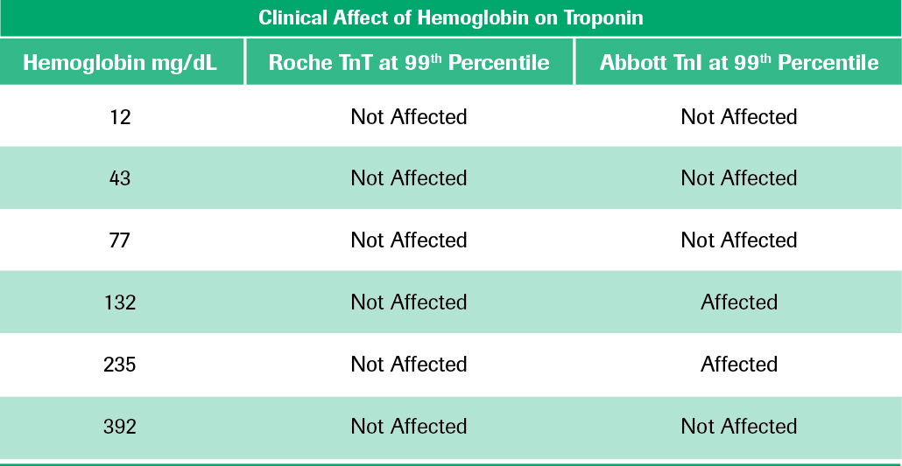

Troponin T clinically appears more robust regardless of the concentration of the hemolysate 32
The above table, constructed from the Florkowski article demonstrates that Troponin T assay result interpretation was not affected even with increasing degrees of hemolysis, while Abbott’s Troponin I assay appears less reliable with more fluctuation at the different levels of hemolysis.32
As seen in the table, a hemoglobin concentration of 132 mg/dL and 235 mg/dL affected the TnI results at the cut point. In other words, these two hemoglobin concentrations caused these positive results to move down below the cut point and change to false negatives.